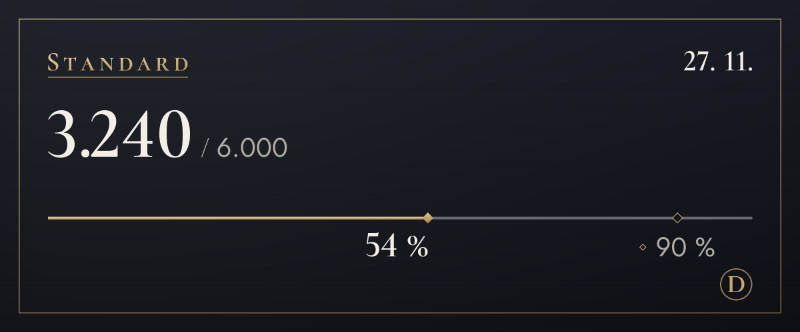

Planovi
Počnite besplatno i promijenite plan kad vam zatreba više.
Trenutačno je probno razdoblje pa još ne primamo plaćanja. Kad se plaćanja otvore, pretplatu ćete sklopiti i otkazati na ovoj stranici. Tijekom probnog razdoblja prevođenje se ne zaustavlja ni kad prijeđete limit.
Free
$0
Najprije isprobajte (pregled izvornika se ne broji)
100 prijevoda mjesečno (oko 3 dnevno), 4 tona prvih 14 dana, 3 riječi u pojmovniku
Isti limit troše i tekst na slikama (obično 4 po slici) i prijevod na slikama (obično 6)
Kako početiLite
$4,99/mj.
Odaberite ton za svaki poslužitelj: s prijateljima na ti, na novom mjestu na Vi
1.200 prijevoda mjesečno (oko 40 dnevno), 4 tona, još 20 dnevno nakon potrošenog limita, 10 riječi u pojmovniku
Isti limit troše i tekst na slikama (obično 4 po slici) i prijevod na slikama (obično 6)
Odaberi (Lite)Standard
Preporučeno
$9,99/mj.
Sasvim dovoljno za svakodnevno dopisivanje
6.000 prijevoda mjesečno (oko 200 dnevno), 4 tona, još 20 dnevno nakon potrošenog limita, 30 riječi u pojmovniku, 20 objašnjenja mjesečno
Isti limit troše i tekst na slikama (obično 4 po slici) i prijevod na slikama (obično 6)
Odaberi (Standard)Plus
$14,99/mj.
Najviše prijevoda za one koji puno prevode
20.000 prijevoda mjesečno (oko 667 dnevno), 4 tona, još 20 dnevno nakon potrošenog limita, 100 riječi u pojmovniku, 60 objašnjenja mjesečno
Isti limit troše i tekst na slikama (obično 4 po slici) i prijevod na slikama (obično 6)
Odaberi (Plus)
- Cijene su u američkim dolarima. Porez vaše zemlje dodaje se pri plaćanju.
- Plaćeni planovi mjesečne su pretplate koje se automatski obnavljaju. Možete ih otkazati bilo kada i sljedeće se plaćanje neće naplatiti.
- Plan Free nikad se sam ne pretvara u plaćeni.
- Pravo na odustanak ograničeno je za dio koji ste već iskoristili, a plan Free možete najprije isprobati.
- Prijevode radi AI (Claude tvrtke Anthropic). Može pogriješiti, pa za važne stvari provjerite i izvornik.
- Pojedinosti su u dokumentima Uvjeti korištenja i Pravila o povratu novca.
Kako se broje prijevodi
Limiti planova broje se u prijevodima. Jedna poruka prevedena na jedan jezik je 1 prijevod.
- Tekst
- 1 po poruciZa duge poruke dodaje se još 1 za svakih 200 znakova na korejskom, kineskom ili japanskom ili za svakih 500 znakova na drugim jezicima. Poruke u kojima nema ničega za prevesti ne broje se.
- Prijevod desnim klikom
- 1 po poruciIsto kao tekst. Prikaz izvornika ili drugog jezika ne broji se.
- Tekst na slikama
- Obično 4 po slici3 za čitanje slike plus prijevod pročitanog teksta. Slike bez teksta ne broje se, a iz jedne poruke čita se najviše 4 slike.
- Prijevod na slikama
- 6 za jedan blok teksta3 za čitanje, 1 za prijevod i 2 za iscrtavanje. Svaki dodatni blok dodaje najmanje 1 za svoj prijevod, a svakih 16 blokova broji se kao jedna slika. Iznad 16 blokova najprije vidite cijenu, a prijevod se stavlja tek kad potvrdite (najviše 128 blokova). Promjena fonta ne broji se.
- Glasovne poruke Uskoro
- 1 po sekundi zvukaPripremamo transkripciju i prijevod glasovnih poruka poslanih iz mobilne aplikacije. Kad se pokrene, tome će se dodati prijevod izgovorenog, a poruke bez govora neće se brojati.
- Dnevni limit
- 200 slikaLimit se broji za svaku osobu posebno i jednak je u svim planovima, kako masovno automatizirano korištenje ne bi zaustavilo prijevode svima ostalima.
- Tko plaća
- Prijevodi otvoreni ikonama ispod slika ili desnim klikom troše limit onoga tko je pritisnuo, a ne onoga tko je objavio poruku.
Na primjer
Uz 200 prijevoda dnevno
Standard preračunat na dan
Dovoljno da prevedete nekoliko slika i još se dopisujete cijelu večer.
Uz 40 prijevoda dnevno
Lite preračunat na dan
Dovoljno za sat dopisivanja s prijateljima.

/prijevod potrošnja.Česta pitanja
Kad se otvaraju plaćanja?
Trenutačno je probno razdoblje pa ne primamo plaćanja i svi koriste plan Free. Plaćanja otvaramo kad dovršimo registraciju poslovanja i povezivanje s pružateljem plaćanja. Datum ćemo objaviti u novostima na poslužitelju za podršku i na ovoj stranici. U Koreji se plaća u wonima, a svugdje drugdje u američkim dolarima.
Kako otkazati pretplatu?
Kad se plaćanja otvore, pretplatu otkazujete na stranici s planovima ove web-stranice, ondje gdje ste je i sklopili. Nakon otkazivanja sljedeće se plaćanje ne naplaćuje, a plan zadržavate do kraja plaćenog razdoblja. Zaslon za upravljanje planom na ploči s postavkama bota također vodi ovamo.
Kako funkcionira povrat novca?
Za prvo plaćanje možete dobiti puni povrat novca u roku od 7 dana. Novac vraćamo i u slučaju prekida usluge ili ako se usluga razlikuje od opisa na ovoj stranici. Ostalo je u dokumentu Pravila o povratu novca.
Spremaju li se slike?
Bot ih ne sprema. Slike se šalju tvrtki Anthropic radi čitanja teksta, a vama se prikazuje samo rezultat. Ništa se ne šalje dok ne pritisnete gumb. Pročitani tekst također se ne sprema; samo prijevod slijedi pravilo predmemorije prijevoda (30 dana). Slika za koju ste pritisnuli „Stavi na sliku“ ostaje u memoriji 15 minuta zajedno s pročitanim tekstom i prijevodom, kako bi se nakon promjene fonta mogla odmah ponovno iscrtati.
Tko izrađuje prijevode?
Prijevode radi AI (Claude tvrtke Anthropic). Isti AI čita tekst na slikama. Prijevodi mogu biti pogrešni, pa za važne stvari provjerite i izvornik. Slike sa stavljenim prijevodom u opisu (alternativnom tekstu) i u napomeni ispod rezultata navode da je riječ o AI prijevodu.